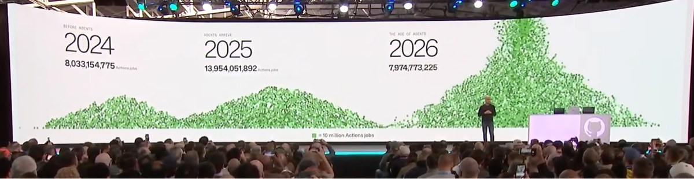
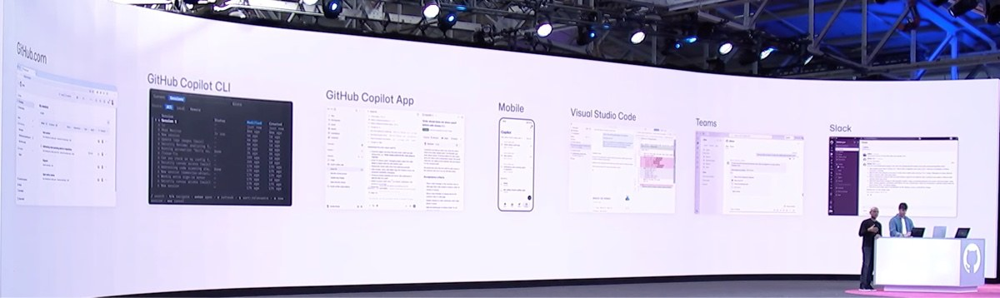

Opening keynote: building the next era of software at GitHub Universe 2026
원본 영상: GitHub Universe 2026 Opening keynote
CHAPTERS
00:00 GitHub’s explosive growth & agentic shift
Jar Parikh (Executive Vice President, CoreAI, Microsoft)
GitHub 의 최근의 기록
- Developers on GitHub: +225 Million
- Octoverse 2026
- code pushes: 17.9B
- commits: 34.3B
- pull requests: 1.3B
- oss contributions: 2.5B
계속해서 새로운 개발자들이 모이고 있고, 매우 많은 push, commits 및 오픈소스 커뮤니티 활동들이 있었고, 매우 빠르게 증가하는 중.

Actions 의 증가 추세만 봐도 엄청나게 변화 하고 있는것을 알 수 있음.
03:26 Evolving for the agentic era
- 최근 수 년동안 개발자들의 역할이 많이 달라짐. 기존에는 코드를 작성는 업무를 했으나, 몇 년 전 부터는 이 업무에 AI 도움을 받기 시작했고, 최근에는 수많은 에이전트 기반의 워크플로우를 관리하는 단계 업무로 달라짐.
- 개발자 업무의 최종 목표는 기존과 크게 달라지지 않았지만 업무를 처리하는 과정, 메커니즘, 사용하는 시스템(도구)는 완전히 달라졌음.
- 현재는 Request, Code changes, Product signal, Schedule 등의 이벤트로 인해 새로운 업무가 생겨나고 있고, SDLC(소프트웨어 개발 주기)는 더 이상 선형적이지 않게 되었기 때문에 기존의 SDLC 라는 것은 사실상 붕괴 되었다고 할 수 있음.
- GitHub는 개방적이고 확장 가능한 방향을 유지하여, 외부의 많은 제품들과 연계하여 사용함으로써 이러한 시대의 변화를 지원하고 있음
06:10 GitHub Copilot app & connectors
Cassidy Williams, Sr. Director, Developer Advocacy, GitHub
Copilot Connector
- copilot connector docs
- GitHub에서 외부 서비스(Slack, Work IQ, Vercel, Netlify, Sentry..)와 인터페이스하기 위한 관리형 서비스.
- 한번 인증 완료 하면 계속 연결하여 사용 가능함.
- Customize 메뉴에 노출된 항목 중 깃헙 로고가 있는 것은 매번 로그인하지 않아도 됨.
09:39 Copilot fusion, Copilot app canvases & Copilot dreaming
Copilot Fusion
- 일종의 LLM model organizer로 작업에 필요한 여러 모델을 조율하여 저렴한 비용으로 최고 수준의 결과를 얻을 수 있게 해줌.
- Artificial Analysis Coding Agent Index에서 Copilot Fusion Max는 60점, Opus 5.5 Max는 62점으로 2점차였지만, 작업당 비용은 절반, 작업시간은 40% 적게 소요됨.
Demo
- Copilot App 내에서 Canvas: browser, terminal, custom
- Browser Canvas에 웹페이지를 띄워서 Agent가 이 페이지와 상호작용 하며 테스트 진행.
Copilot Dreaming
- GitHub Copilot의 맥락(context)을 백그라운드에서 자동으로 유지, 개선하는 퍼블릭 프리뷰 기능.
- 메모리, 지침을 새로운 환경이나 모델에 맞도록 분석하고, 자동으로 개선하는 기능.
14:55 Copilot projects & Copilot automations
Burke Holland, Principal Cloud Advocate, Microsoft
Copilot Projects
- 하나의 작업을 처리하기 위해서 여러 repo를 생성하고 각각 처리해야 하는 경우, 각각의 repo에 각각의 agent를 할당하여 처리.
- Copilot Orchestrator: 사용자의 요청을 분석하고, 가장 적합한 AI 에이전트, 도구, 플러그인 또는 지식 소스를 자동으로 연결하여 실행하는 시스템.
- 사용자는 Orchestrator와 대화를 하기 때문에 전체 문맥이 유지되고, 하위 에이전트들의 결과를 취합하여 다시 사용자와 대화 하게 되므로 사용자는 개별 에이전트의 처리 결과를 기다렸다가 다음 요청을 하지 않아도 됨.
- 개발 완료 및 배포 전에 결과물과 거의 유사한 목업을 얻을 수 있어서 이것으로 마케팅에 활용 가능.
- 각 에이전트들은 로컬 또는 클라우드에서 동작할 수 있어서, 클라우드에서 동작 하는 경우 작업자가 노트북을 닫아도 작업이 진행됨.
19:59 Agent-powered quality & security
Damian Brady, Staff Developer Advocate, GitHub
- 에이전트가 많은 코드를 작성하게 되면서, 우리는 더 많은 PR 및 보안, 더 많은 배포에 대한 검토를 해야 함.
- 이러한 상황에 퀄리티를 유지하기 위한 방법이 중요함.

- 여러 장치를 연결하여 업무를 진행할 수 있도록 함.
- 모바일에서 이슈를 생성하고 여기서 시작된 세션이 VS Code에서 연결하여 진행되고 관리되는 작업이 가능함.
- 하나의 업무를 진행하면서 결과를 기다리지 않고 다른 업무를 바로 진행할 수 있음.
Copilot Automations
- 리포지토리에서 작업할 AI 기반 워크플로우를 생성.
- 클라우드에서 실행되며 이벤트에 대응할 수 있고,
- 일정을 설정해 실행하거나, 수동으로 트리거 하여 사용할 수 있음.
- 사용자가 다른 일에 집중하는 동안 에이전트가 분류 및 위임 업무를 처리할 수 있음.
GitHub Code Scanning
- 전체 코드 베이스를 스캔하여 기존 코드와 새로운 코드의 취약점을 발견하고,
- 개선하는 업무를 automations에 할당하여 자동으로 취약점을 제거 및 PR 등록하는 업무를 자동화.
- 시크릿 정보를 실수로 push 하는 경우 시크릿 스캔과 API push 보호 기능에 의해 저장소에 도달하지 않고 감지할 수 있음.
Copilot Code Review Max
- 모든 언어로 작성된 코드를 검토하고 피드백으로 개선된 코드를 제안하는 서비스.
- Agent에게 Merge pull request 기능을 허용하면 Agent는 이슈를 수정하여 PR을 등록한 후 리뷰하고 머지하여 사실상 전체 작업을 완료함.
- Agent를 이용한 전체 플랫폼을 통해서 빠르고 안전하게 확장하고 발전할 수 있음.
31:25 Rebuilding GitHub’s core infrastructure
The next big evolution of our Git architecture
GitHub는 현재 수많은 요청이 몰리고 있지만, 모두 잘 처리하고 있을 정도로 성능이 보장되고 있음.
April Leonard, VP of Engineering for GitHub Copilot, GitHub
More agents, More traffic
많은 개발자와 에이전트가 몰리면서 처리량이 늘어나고 있어서, 트래픽은 한계치까지 도달하고 있었고, 이를 위한 개선을 진행하고 있음.
Rebuilding the foundation
- 호스팅을 Azure로 이전.
- One lock per branch: git write 정책을 변경하여, branch 단위로 lock 되도록 함.
- Azure Blob Storage: Azure의 스토리지 시스템을 개선하여 전체 처리속도를 개선.
- 결과 기존보다 180배 높은 throughput을 얻어냄.
Open Claw
GitHub가 Git 객체 저장방식을 변경하여 개선되었으므로, Open Claw는 비효율적으로 기다리는 일이 줄게 될 것이고, 더 빠르게 처리가 가능하게 될 것으로 봄.
40:00 The future of software development
GitHub가 현재 진행하는 것들:
- 새로운 스토리지 아키텍처로 마이그레이션은 진행중
- GitHub AI 게이트웨이 개선: 게이트웨이 최적화, 프롬프트 캐싱, 지연시간 최소화, 하네스 성능 향상
- Actions 개선
- Azure와 GitHub의 기존 데이터센터간의 통신 회선을 확장 및 최적화
소프트웨어를 만드는 방식은 변화하고 있지만 개발자의 중요성은 여전히 높음. 코드를 작성하는 것이 아닌 문제를 이해하고 개선 방향을 떠올려서 현실 세계에 구현하는 능력과 추진력이 필요함. GitHub의 커뮤니티는 한 사람의 아이디어를 공유하고 또 다른 사람이 이를 발전시키며 확장해나갈 수 있도록 하고 있음.
개인적인 후기
원래 이 행사에 크게 관심이 있었던 것도, 꼭 보려고 했던 것도 아닌데, 우연히 영상을 보기 시작해서, 새벽에 늦게 잠들었었습니다. 이 글은 이후에 차분히 다시 보면서 내용을 좀 정리한 것이네요.
참고로 저는 GitHub 의 Copilot 을 사용하고 있지는 않습니다. 다만 최근의 소프트웨어 개발 씬의 이슈, AI Agent 와 같은 흐름이나 분위기를 느껴보기에는 좋은 것 같습니다.
이런 저런 컨퍼런스를 들으러 다니는 것을 좋아하지만, 이것 때문에 미국까지 가는 건 쉽지 않은데 이렇게 영상으로 스트리밍 해주니 감사하네요..ㅋ 다른 세션들도 많이 공유해주면 좋았겠지만.. 일단 저는 요거라도 ㅋㅋ